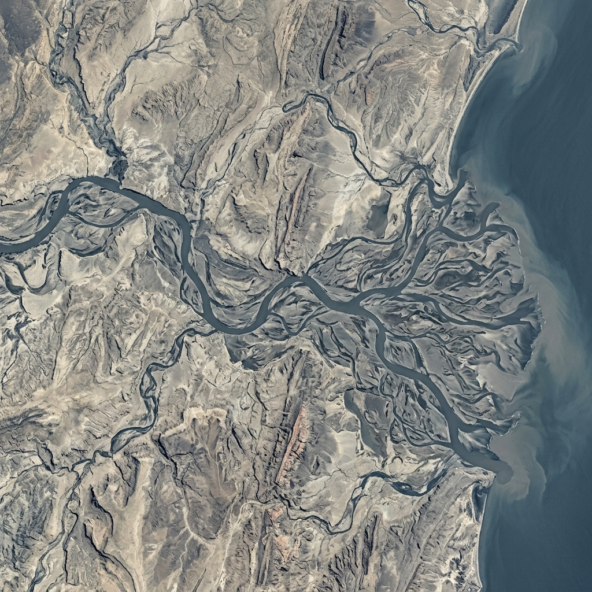

Hidrología superficial
Análisis de cuencas, estimación de caudales y modelación del ciclo hidrológico.
- Análisis de precipitación y caudal
- Delimitación y caracterización de cuencas
- Estimación de crecidas de diseño
Ingeniería hídrica aplicada
Soluciones técnicas para el diagnóstico, diseño y evaluación de proyectos vinculados con el agua y su relación con el territorio.
Quiénes somos
GEOFRACTALT es una consultoría especializada en ingeniería hidráulica, hidrología aplicada y análisis territorial.
Participa en proyectos desde las etapas de diagnóstico hasta la supervisión técnica, sin intervenir como empresa constructora. Su enfoque combina ingeniería, análisis espacial e investigación aplicada para comprender el comportamiento del agua dentro del territorio y su relación con la infraestructura.

Áreas de trabajo
Intervención técnica especializada a lo largo del ciclo completo de proyectos hídricos: desde el diagnóstico inicial hasta la validación y supervisión.
Análisis de cuencas, estimación de caudales y modelación del ciclo hidrológico.
Diseño y evaluación de sistemas de conducción, drenaje y obras hidráulicas.
Delimitación de zonas inundables, análisis de riesgo y definición de medidas de mitigación.
Estudio de acuíferos, flujo subterráneo e interacción con infraestructura.
Aplicación de herramientas de simulación hidrológica e hidráulica para soporte técnico a proyectos.
Revisión técnica independiente de proyectos y estudios hídricos existentes.
Proceso de trabajo
Las soluciones se aplican en proyectos urbanos, infraestructura de transporte, desarrollos industriales y gestión territorial, considerando el comportamiento del agua en relación con el entorno, la infraestructura y el riesgo.
El trabajo parte del entendimiento del sitio y de las condiciones hidrológicas e hidráulicas del proyecto. A partir de ello se definen criterios, alternativas, diseños y medidas de revisión que permitan dar soporte técnico al desarrollo de infraestructura hídrica.
Proyectos
Trabajemos juntos
Consultas técnicas, propuestas de proyecto o solicitudes de información.